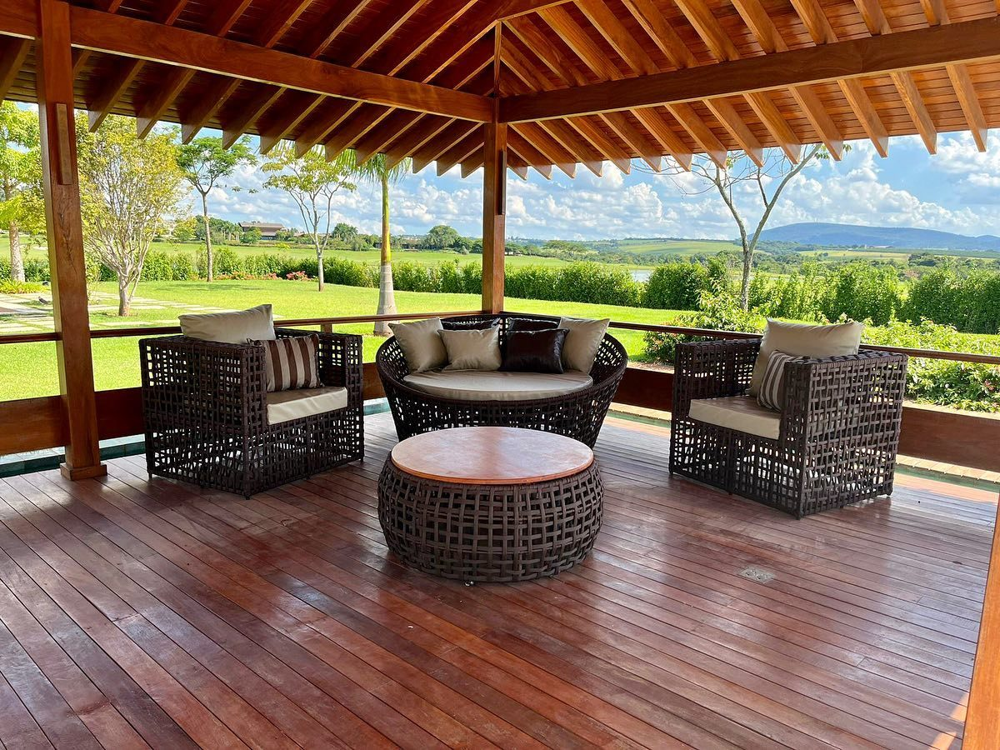
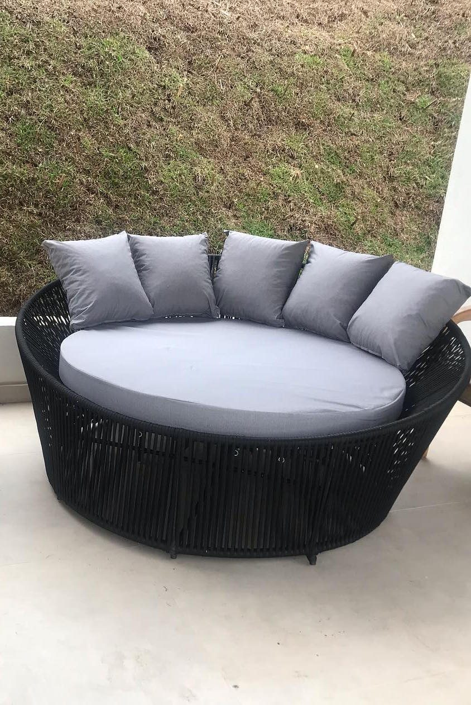
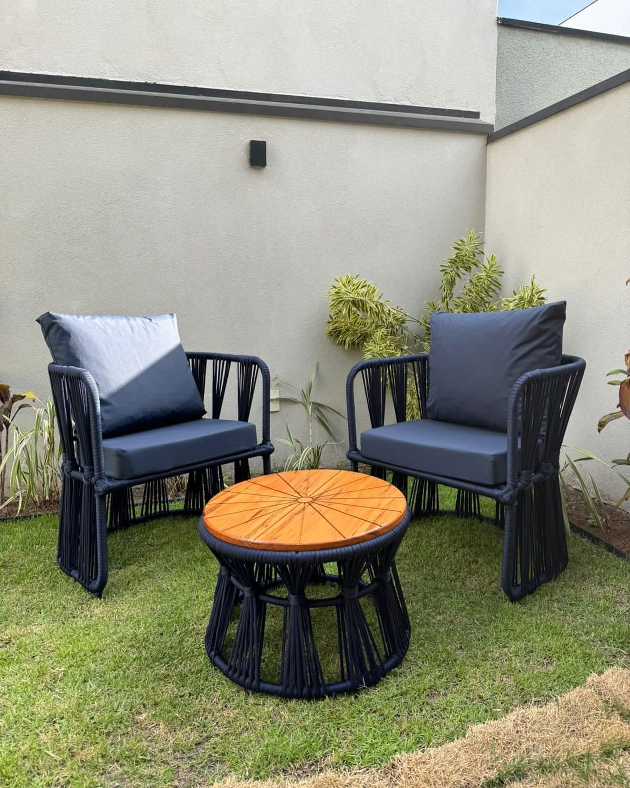
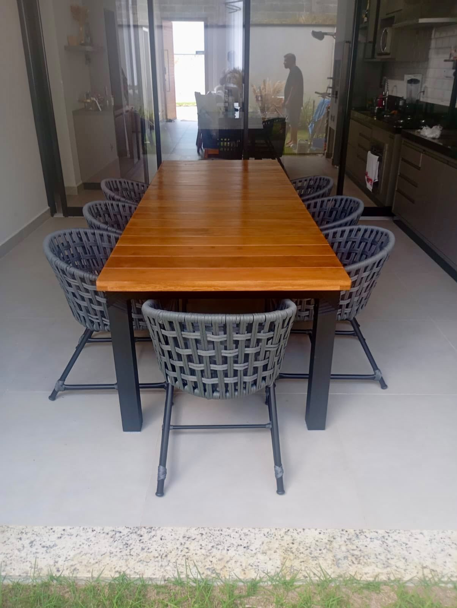
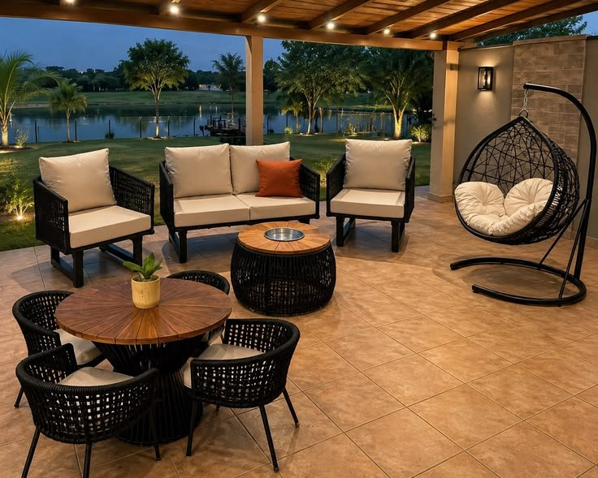
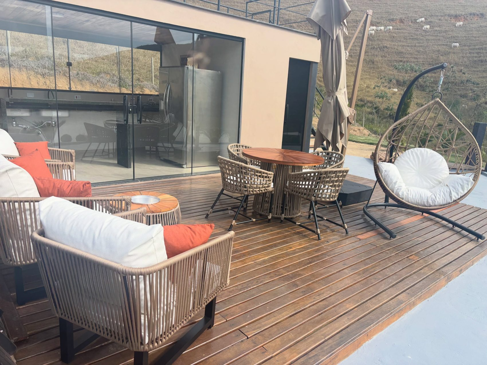
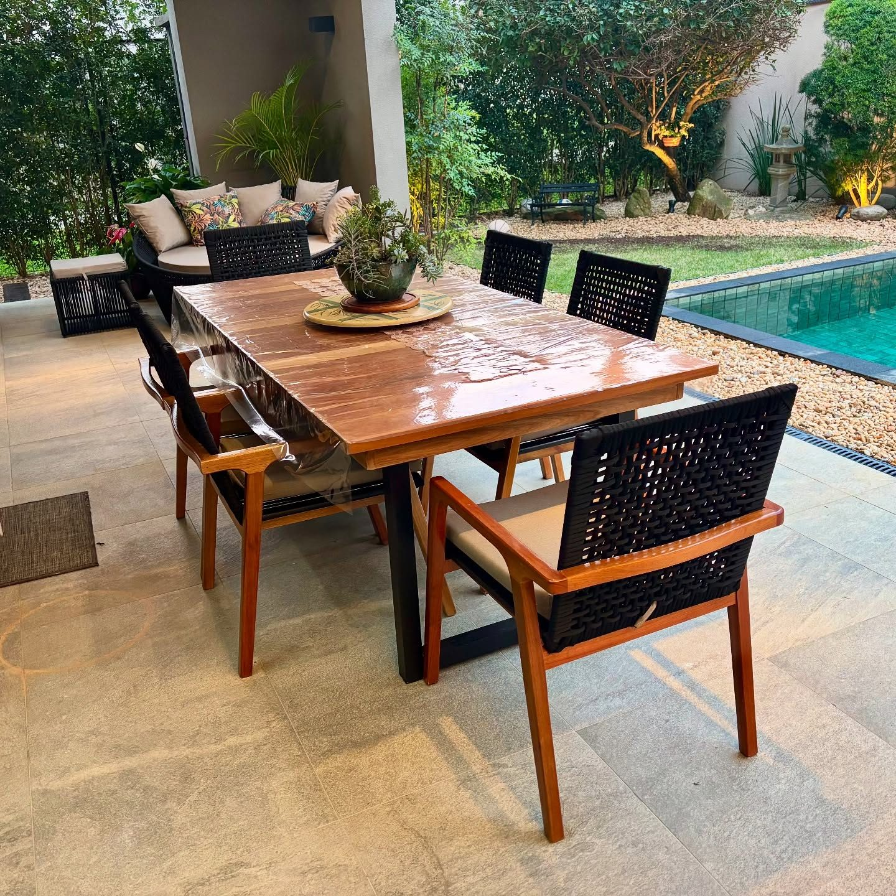
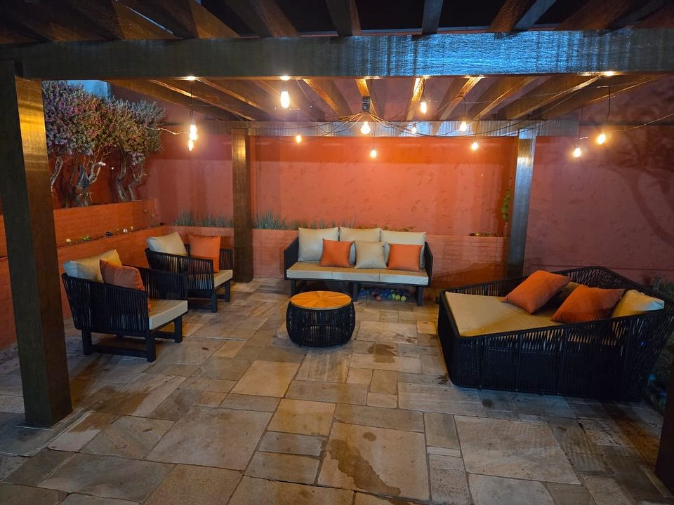

Móveis artesanais para viver ao ar livre.
Sofás, poltronas, mesas e balanços em alumínio e tricô náutico. Direto de fábrica e personalizados para o seu espaço.
Cada peça nasce na nossa fábrica com estrutura de alumínio, tricô náutico trançado à mão e as medidas exatas do seu espaço.
Direto de fábrica
Você fala com quem produz, do primeiro contato à entrega.
Personalizados
Medidas, cores e composição definidas com você.
Showroom parceiro
Veja as peças de perto em São José dos Campos.
Pagamento na entrega
Você recebe os móveis e só então conclui o pagamento.
Alumínio que não enferruja e tricô náutico trançado à mão, fio por fio.

Feito com o que dura
- 01
Estrutura de alumínio
Leve para mover de lugar, firme no uso e sem ferrugem com chuva ou maresia.
- 02
Pintura eletrostática
Acabamento uniforme e resistente aplicado sobre toda a estrutura.
- 03
Acabamento em tricô náutico com UV
Corda náutica trançada à mão na fábrica, própria para ficar ao sol.
- 04
Estofados em Acquablok e couro náutico
Materiais pensados para área externa, com cores escolhidas junto com você.
As peças

Sofás
De dois e três lugares, com almofadas.

Poltronas
Para compor com o sofá.

Mesas de jantar
Redondas e retangulares, até dez lugares.

Tampo giratório
Mesa com centro giratório embutido.

Cadeiras
Para jantar e bistrô.

Balanços
Suspensos, com suporte próprio.
Chaises
Para o descanso ao lado da piscina.

O ambiente inteiro em um kit de 10 itens.
Para quem quer resolver a área externa de uma vez, com todas as peças na mesma trama e nas mesmas cores.
- 1 mesa com 4 cadeiras
- 1 sofá de dois lugares
- 2 poltronas
- 1 mesa de centro
- 1 balanço com suporte





Ambientes entregues
Piscinas, varandas, decks e áreas gourmet de clientes.
Galeria de fotos
Do pedido à entrega
- 01
Conversa
Você conta como é o espaço e o que imagina para ele. Fotos e medidas ajudam bastante.
- 02
Proposta
Definimos juntos as peças, as dimensões, a cor da corda e os tecidos das almofadas.
- 03
Fabricação
A estrutura de alumínio é montada e o tricô náutico é trançado à mão na nossa fábrica.
- 04
Entrega
Levamos os móveis até você. O pagamento é feito na entrega.
Entregamos em cinco estados.
- SPSão Paulo
- MGMinas Gerais
- RJRio de Janeiro
- GOGoiás
- DFDistrito Federal
Quer ver as peças antes de decidir? Temos showroom parceiro em São José dos Campos. Fale com a gente para combinar a visita.
Dúvidas frequentes
Os móveis podem ficar no sol e na chuva?
Sim. As peças são feitas em alumínio, que não enferruja, e em tricô náutico, uma corda resistente e própria para área externa.
Posso escolher medidas e cores?
Pode. Os móveis são personalizados: você define tamanho, cor da corda, tecido das almofadas e a composição do conjunto.
Vocês vendem peças avulsas ou só kits?
Os dois. Você pode encomendar uma única peça, montar o seu conjunto ou escolher o kit completo de 10 itens.
Para onde vocês entregam?
Entregamos em São Paulo, Minas Gerais, Rio de Janeiro, Goiás e Distrito Federal.
Como funciona o pagamento?
O pagamento é feito na entrega. As condições de parcelamento são informadas junto com a proposta.
Dá para ver os móveis pessoalmente?
Sim, no showroom parceiro em São José dos Campos. Chame no WhatsApp para combinar.
Vamos mobiliar o seu espaço.
Envie as medidas, fotos do ambiente e as peças que você imagina. A fábrica responde pelo WhatsApp com a proposta.